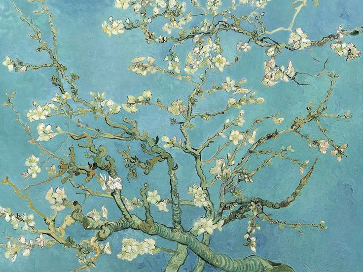

Blossoms of Hope: Van Gogh's "Almond Blossoms"
Vincent van Gogh's "Almond Blossoms," painted in 1890, stands as a symbol of rebirth, beauty, and the enduring power of nature. This exquisite masterpiece, created during a moment of personal joy and hope, captures the delicate essence of almond blossoms in full bloom.
A Gift of New Life
"Almond Blossoms" holds a special place in van Gogh's body of work, as it was painted as a gift for his newborn nephew. The branches laden with white and pink blossoms symbolize the promise of new life, renewal, and the inherent beauty found in the cyclical nature of existence.
The Language of Blossoms
Van Gogh's expressive brushstrokes breathe life into the almond blossoms. The swirling patterns and vibrant colors convey a sense of movement and vitality. Each petal and branch seems to dance in the gentle embrace of the wind, creating a harmonious composition that resonates with the joyous occasion it commemorates.
The Symbolism of Blue
The background of "Almond Blossoms" is bathed in a serene shade of blue. This choice of color serves to enhance the overall visual impact of the blossoms and adds a layer of symbolic meaning. Van Gogh's use of blue, often associated with tranquility and spirituality, transforms the painting into a serene and contemplative masterpiece.
Hope Amidst Challenges
Painted during a time of personal challenges for the artist, "Almond Blossoms" is a testament to van Gogh's ability to find solace and inspiration in the midst of adversity. The blossoms, with their delicate beauty, become a metaphor for the artist's enduring spirit and his capacity to create moments of joy even in difficult times.
Legacy and Significance
"Almond Blossoms" has left an indelible mark on the art world, admired for its beauty, symbolism, and emotional resonance. Its influence can be seen in the way it continues to inspire artists, symbolizing the enduring themes of hope, renewal, and the timeless beauty found in the natural world.
Conclusion:
As we immerse ourselves in the blossoms of "Almond Blossoms," we are reminded of the profound connection between art and the human experience. Van Gogh, in his celebration of new life and beauty, invites us to appreciate the simple yet profound moments that shape our lives. The blossoms, immortalized on canvas, serve as a reminder that even in the face of challenges, there is always the potential for growth, renewal, and the blossoming of hope.
In the words of the artist, "Great things are not done by impulse but by a series of small things brought together."